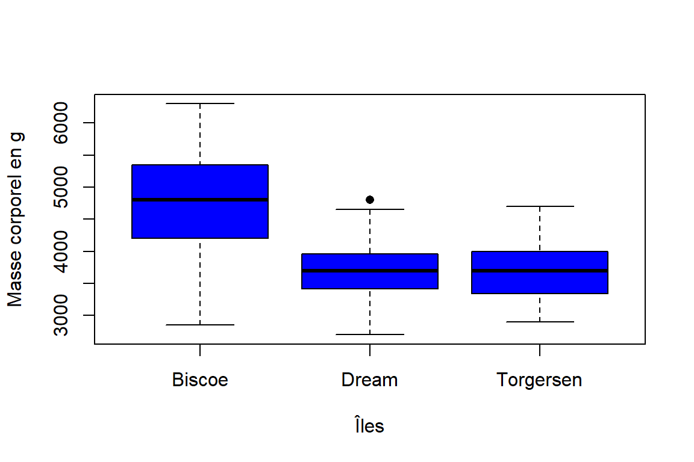
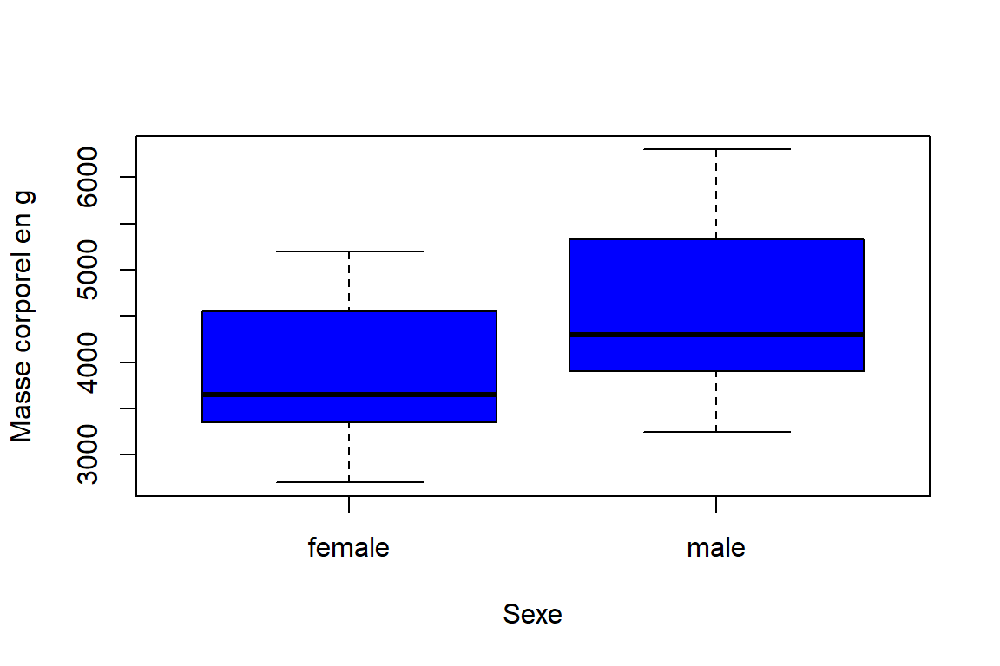
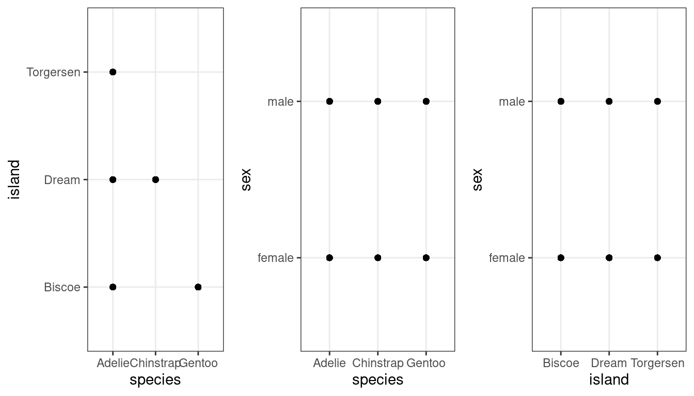
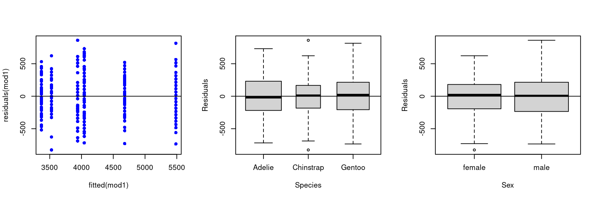

Warning in checkMatrixPackageVersion(getOption("TMB.check.Matrix", TRUE)): Package version inconsistency detected.
TMB was built with Matrix version 1.6.4
Current Matrix version is 1.6.1.1
Please re-install 'TMB' from source using install.packages('TMB', type = 'source') or ask CRAN for a binary version of 'TMB' matching CRAN's 'Matrix' package
Loading required package: lme4
Loading required package: Matrix
Attaching package: 'lme4'
The following object is masked from 'package:nlme':
lmList
Loading required package: lmerTest
Attaching package: 'lmerTest'
The following object is masked from 'package:lme4':
lmer
The following object is masked from 'package:stats':
step
library(sp)
Mixed models in ecology
Introduction
General Linear Models, such as linear regressions, ANOVA, and ANCOVA, are commonly employed to depict the relationships between a dependent variable, denoted as (Y), and one or more independent variables (\(X_1, X_2, ..., X_n\)). These models are based on several assumptions, including homoscedasticity of the variance, non-collinearity of residuals, and normality of residuals. Generalized Linear Models (GLMs) can address homoscedasticity and normality assumptions by accommodating data from different distributions like Poisson, binomial, or Gamma distributions, which are often encountered in ecology. However, it is crucial to validate the non-collinearity of residuals.
In biological and ecological experiments, the assumption of independence of measurements, necessary for non-collinearity of residuals, is frequently violated. This is because measurements are often correlated within families, regions, repeated on the same individuals, or across time and sites. In such cases, it becomes necessary to employ mixed models. These models, extensions of both general and generalized linear models, consider the correlation of measurements by introducing individuals, regions, families, or other factors as random effects in the models. This incorporation allows for a more accurate representation of the complex dependencies present in the data.
What is a random effect, and how do I determine if my effect is random or fixed ?
To clarify the distinction between fixed and random effects, let’s examine two examples:
Example 1: Comparing individual cars
Abdel, Antonio, Odeline, and Aela want to compare the oil consumption of their individual cars. They conduct a test by measuring oil consumption during a 30-kilometer drive, repeated five times in a day, with consistent traffic conditions and driving patterns. The data set consists of one factor with four levels (representing the four cars) and five replicates each. Performing a one-way ANOVA allows them to determine which car is the most economical. In this scenario, the factor “car” is fixed, and the analysis provides conclusions specific to the four studied cars.
Example 2: Assessing homogeneity within a car model
A car constructor aims to evaluate the homogeneity of oil consumption within a car model, treating the model as a population of cars with expected heterogeneity in gas consumption. Similar to Example 1, they measure oil consumption by driving each car 30 kilometers, five times in a day, resulting in a data set with one factor and four levels, each with five replicates. Unlike the first example, the cars in this case were sampled from a larger population, and the objective is to draw conclusions about the entire population, not just the sampled cars. Here, a mixed model with the factor ‘car’ as a random factor should be used.
In summary, a factor is designated as fixed when the experimenter intentionally chooses a limited number of levels for investigation, aiming to assess the impact of each level on the response variable. A factor is considered random when the selected levels represent only a sample from all possible levels. In this case, the objective is to understand the variability in the response variable attributed to this factor.
For example, let’s consider a researcher investigating the influence of the number of training sessions per week on the concentration of red blood cells in recreational athletes. The researcher collects data from 50 athletes in a local club who train between 1 and 5 times a week. Initially planning a simple ANOVA with the number of training sessions as the main factor, the researcher discovers that most athletes in the data set belong to only 10 families, leading to non-independent measurements. To address this issue, the researcher opts for a mixed model, treating the number of training sessions as a fixed factor and the family as a random factor. This approach allows the exploration of variability between families without the intention of directly comparing them.
Now that we have a general understanding of what mixed models are, we can delve into the mathematical formalism of these models. In this chapter, you will discover how matrices can be employed to create mixed models, explore the various dependency structures that exist, and ultimately, find an implementation of mixed models in R.
1. Formalization of the linear mixed model
The linear mixed model can be formulated as follows:
A mixed effects model incorporates random effects (\(\gamma_i\)), or a combination of both random and fixed effects (\(\beta\)), whereas a standard linear model includes only fixed effects.
When it is clear that the researcher intends to compare particular, predefined levels of a treatment, those levels are considered fixed effects. Conversely, when the levels of the treatment are drawn from a larger population of possible levels, the treatment is treated as a random effect.
In addition, random effects are included in a model when there is a correlation or dependence among the observations that cannot be ignored.
RANDOM VARIABLE = “something that could not be known before sampling/measurement/observation”.
In matrix form, the mixed model is written as:
\[
Y \sim \mathcal{N{n}}(X\theta, \Sigma)
\] where:
\(Y\) is the response vector of the observations, \(X\theta\) is the expectation of the response vector \(Y\) and \(\Sigma\) is the variance matrix.
We can note that if the response vector \(Y\) is of dimension \(n\), the matrix \(\Sigma\) is of dimensions \(n \times n\). Since \(\Sigma\) is symmetric, it comprises \(n(n + 1)/2\) parameters. This is because, in a symmetric matrix, the elements above (or below) the main diagonal are the same as those below (or above), reducing the total number of parameters needed to describe the matrix.
However, the limitation of the available data prevents considering models where all these \(n(n + 1)/2\) parameters are free. This restriction arises from the need to have a significant amount of data to reliably estimate each parameter, which quickly becomes unrealistic with a limited dataset.
To address this issue, the linear mixed-effects model proposes an approach where a structure is imposed on the variance matrix \(\Sigma\). This structure, governed by a limited number of parameters called “variance parameters,” denoted \(\psi\), reduces the number of parameters needed to describe the covariance matrix. Consequently, the model can be realistically adapted even with a limited amount of data, while accounting for the correlation between observations within the framework of linear mixed-effects models. The model parameters include \(\theta\) for the expectation and \(\psi\) for the variance.
2. Matrix computation in mixed models
It is possible to encounter (mixed) linear models written under their matrix form, for their concision. It is therefore natural to present this form in the context of mixed models.
As a reminder, a linear model, like linear regression, with \(p\) explanatory variables can be written \[y_i = \beta_0 + \beta_1x_i^{(1)} + \ldots + \beta_px_i^{(p)} + \varepsilon_i\], where \(y_i\) represent an observation of the response variable \(Y\) for the individual \(i\), \(\beta_0\) the intercept, \(\beta_1,...,\beta_p\) the coefficients associated to each explanatory variable \(X_1,...,X_p\), \(x_i^{(1)},...,x_i^{(p)}\) the \(p\) observations (for the \(p\) explanatory variables) for the individual \(i\), and \(e_i\) an error term associated to the individual \(i\). We can see \(e_i\) as a realization of a random variable \(E_i\) distributed according to a normal law \(\mathcal{N}(0,\sigma^2)\). Noting \[y=\begin{pmatrix}
y_1\\
\vdots\\
y_n\\
\end{pmatrix}\], \[X=\begin{pmatrix}
1&x_1^{(1)} & \ldots & x_1^{(p)}\\
\vdots & \vdots & \ldots & \vdots \\
1 & x_n^{(1)} & \ldots & x_n^{(p)}
\end{pmatrix}\], \[\theta=\begin{pmatrix}
\beta_0\\
\vdots\\
\beta_p\\
\end{pmatrix}\] and \[e=\begin{pmatrix}
\varepsilon_1\\
\vdots\\
\varepsilon_n\\
\end{pmatrix}\], we can rewrite the previous model under the form \[y=X\theta+e\]Here, \(e\) is a vector of \(n\) independent realizations or a random variable \(E_i\) following a normal distribution \(\mathcal{N}(0,\sigma^2)\). Hence, \(e\) is a realization of a random variable \(E\) following the distribution \(\mathcal{N}_n(0,\sigma^2I_n)\) (\(e_i\) is an observation of the random variable \(E_i\) distributed according to a normal law \(\mathcal{N}(0,\sigma^2)\)). Similarly, \(y\) is an observation of \(Y=X\theta+E\) where \(Y\sim\mathcal{N}_n(X\theta,\sigma^2I_n)\) (\(y_i\) is an observation of \(Y_i\) distributed according to a normal law \(\mathcal{N}((X\theta)_i,\sigma^2)\)). Hence, by introducing \(Y\) and \(E\), the previous model can be written \(Y=X\theta+E\) where \(\mathrm{E}\stackrel{iid}\sim\mathcal{N}_n(0,\sigma^2I_n)\).
By definition, the mean response is equal to \(X\theta\), more or less an error term equals to 0 in average but that varies of \(\sigma^2I_n\). Thus, we can write \[Y\sim\mathcal{N}_n(X\theta,\sigma^2I_n)\]We note that when writing \(\mathrm{E}\stackrel{iid}\sim\mathcal{N}_n(0,\sigma^2I_n)\), each error has got the same variance (\(\sigma^2\)) because every samples are independent. We will see subsequently that if this independence condition is not respected, all the errors do not have the same variance, we speak of a dependence structure. The dependence between the measurements determines the dependence structure (measurements repeated over time, individuals grouped by common ancestry, etc.). We will see here that in the context of mixed models, the previous equation is written \[Y\sim\mathcal{N}_n(X\theta,\sum)\]. When writing this, we note that the average response does not change. Generalization concerns errors. Now, let’s study study the components of variance \(\sum\) by following an example. We decide to study the heritability of a trait (height for example). We want to see if individuals from one ascendant are more similar than those from another ascendant. We have \(m\) ascendants, numbered \(i=1,...,m\), from a larger population, each having \(n\) descendants numbered \(j=1,...,n\). We pose \(Y_{ij}=\) the trait value for the j-ème descendant of the i-ème ascendant. Individuals with the same ascendant are therefore grouped by their belonging to the same ascendant. The fact of sampling ancestors from a larger population (random effect) introduces a correlation between the traits measured on the descendants of the same ancestor. This correlation is uniform between individuals. The descendants between the groups (for different ancestors) are independent. Thus, we write \[
\mathbb{Cov}(Y_{ij},Y_{i'j'}) = \left\{
\begin{array}{ll}
\gamma^2 & \mbox{si } i=i'\\
0 & \mbox{sinon.}
\end{array}
\right.
\] This model therefore includes a variance associated with the ascendant effect \(\gamma^2\) and a residual variance \(\sigma^2\). We precise that \(\gamma^2\) represent the variability between the ascendants. Starting from the linear model \(Y=X\theta+E\) where \(E\) is still \(\sigma^2I_n\), we just have to take into account this variance associated with the ascendant effect. To do this, we introduce the matrix \(Z\), of dimension \(n\times m\), where \[
Z_{a,i} = \left\{
\begin{array}{ll}
1 & \mbox{l'individu } a=(i,j) \mbox{ est le descendant de l'ascendant }i\\
0 & \mbox{sinon.}
\end{array}
\right.
\] and the vector \(U\) of dimension \(m\) including the random effects \(\gamma^2\). Hence, the previous model can be rewritten \(Y=X\theta+ZU+E\). We remind that \(U\) and \(E\) are independents, gaussiens centered, and that \(\mathbb{Var}(U)=\gamma^2I_m\). Consequently, \(\mathbb{E}(Y)=X\theta\) and \(\sum = \mathbb{V}(Y)=Z\mathbb{V}(U)Z'+\mathbb{V}(E) = \gamma^2ZZ'+\sigma^2(I_n)\). We get back to the matrix form \(Y\sim\mathcal{N}(X\theta,\sum)\) with \[\sum=\begin{pmatrix}
R&0 & \ldots & 0\\
0 & \ddots & \ddots & 0 \\
\vdots & \ddots & \ddots & 0 \\
0 & \ldots & 0 & R
\end{pmatrix}\], where \[R=\begin{pmatrix}
\sigma^2+\gamma^2&\gamma^2 & \ldots & \gamma^2\\
\gamma^2 & \ddots & \ddots & \gamma^2 \\
\vdots & \ddots & \ddots & \gamma^2 \\
\gamma^2 & \ldots & \gamma^2 & \sigma^2+\gamma^2
\end{pmatrix}\]\(R\) corresponds to the representation of the variances due to the random effect and residuals. Note that the diagonal blocks are of the same dimensions if the number of descendants is identical for each ascendant.
3. Dependency structures
This part of the chapter is inspired by (L. Bel 2016)’s book.
3.1 Case of repeated measurements
We want to evaluate the effect of different diet on weight gain in rats. Several animals (\(j\)) follow each diet (\(i\)), and they kept the same diet across all the experiment. Each week animal weight (\(Y_{ij}\)) is measured, during T weeks. In this case, measures are repeated across time, such measurements are called longitudinal data. To analyse this data, the temporal dependency must be taken into account, for this, the following model can be used:
Model The model proposed here takes into account the kinetic aspect of the experiment and predicts that the dependence between two measurements depends on the time interval between them. We assume that the weights are Gaussian with the following expected values :
\[ E(Y_{ijt}) = µ + α_i + γ_t + (αγ)_{it}.\]
Dependency structure We assume that all measurements have the same variance
This structure assumes that measurements made on different animals are independent. It is also assumed that |ρ| < 1, which implies that the longer the time interval, the less correlated the tests on the same animal. This form of covariance corresponds to an autoregressive process of order 1, generally denoted AR(1). This model has two variance parameters: the temporal correlation ρ and the variance of each observation \(σ^2\).
Because of the independence between the measurements obtained on different animals, the variance matrix Σ also has the same diagonal block shape, but the block (R) differs.
We are going to use the BodyWeight dataset from the nlme package. In this dataset, weight is measured on 16 rats every 7 days during 64 days (which gives 11 measurements for each rats). Three diets are tested with 88 rats following diet 1 and 44 following diet 2 and 3.
The research question is: Is weight gain different depending on the diet? The model will be a mixed model with diet and time as fixed factor and individuals as random factor: weight ~ Diet * Time | Rat.
time_model =gls(weight ~ Diet * Time, data = BodyWeight, correlation =corAR1(form =~1| Rat))summary(time_model)
Generalized least squares fit by REML
Model: weight ~ Diet * Time
Data: BodyWeight
AIC BIC logLik
1152.248 1177.334 -568.1239
Correlation Structure: AR(1)
Formula: ~1 | Rat
Parameter estimate(s):
Phi
0.9895746
Coefficients:
Value Std.Error t-value p-value
(Intercept) 250.11069 13.327526 18.766475 0.0000
Diet2 203.46561 23.083952 8.814158 0.0000
Diet3 260.91151 23.083952 11.302723 0.0000
Time 0.37351 0.090964 4.106160 0.0001
Diet2:Time 0.62384 0.157554 3.959506 0.0001
Diet3:Time 0.18780 0.157554 1.191998 0.2349
Correlation:
(Intr) Diet2 Diet3 Time Dt2:Tm
Diet2 -0.577
Diet3 -0.577 0.333
Time -0.222 0.128 0.128
Diet2:Time 0.128 -0.222 -0.074 -0.577
Diet3:Time 0.128 -0.074 -0.222 -0.577 0.333
Standardized residuals:
Min Q1 Med Q3 Max
-1.44446363 -0.63038331 0.02804647 0.25238087 2.93319234
Residual standard error: 37.70413
Degrees of freedom: 176 total; 170 residual
In this example, the time correlation ρ has a value of 0.989. The sequence of weight values was highly correlated. The model allowed this temporal dependency to be taken into account.
3.2 Case of spatial autocorrelation
Dependency structure We want to take into account the dependency due to the possible spatial proximity between the sites at which the measurements were taken.
To do this, \(d(i, i')\) is the distance separating sites \(i\) and \(i'\), and the following equation is used
\[Cov(Y_i, Y_i{'}) = e^{−δ.d(i,i')}\]
As in the case of repeated measurements, there is no simple way of writing this in terms of random effects. Moreover, since all the measurements are dependent, the matrix Σ is no longer diagonal per block and is written as :
Generalized least squares fit by REML
Model: y ~ x
Data: data.spatialCor
AIC BIC logLik
974.3235 987.2484 -482.1618
Correlation Structure: Exponential spatial correlation
Formula: ~LAT + LONG
Parameter estimate(s):
range nugget
1.6956723 0.1280655
Coefficients:
Value Std.Error t-value p-value
(Intercept) 65.90018 21.824752 3.019516 0.0032
x 0.94572 0.286245 3.303886 0.0013
Correlation:
(Intr)
x -0.418
Standardized residuals:
Min Q1 Med Q3 Max
-1.6019483 -0.3507695 0.1608776 0.6451751 2.1331505
Residual standard error: 47.68716
Degrees of freedom: 100 total; 98 residual
In spatially correlated data, three coefficients are needed to describe the correlation structure. The variance increases with increasing distance up to a point the sill. The span of distances over which points are correlated is called the range. While we might expect the value of variance at a distance of zero to be zero, in reality we rarely have sampling units that approach such a small distance from one another.The value of variance when distance is equal to zero is the nugget.
Here, in our example, the value of the sill, the range and the nugget are respectively 47.68, 1.69 and 0.12.
4. Application
For this example of a mixed model application, we will use a general linear mixed model. This is a special case of a general linear model, in which the response is quantitative and the predictor variables are both quantitative and qualitative, and the model includes random factors to take account of data dependency. Mixed models must respect the normality of residuals and the homogeneity of variances. (The structure and lines of code are inspired by (Outreman 2023)’s courses on linear mixed model.)
4.1 Dataset presentation and objectives of the analysis
For this worked exercise, we will use data from a study performed on penguins. The aim of this study is to test whether species, sex and island influence the body mass of penguins. In the experimental design, the data are collected from one year to the next (from 2007 to 2009), which suggests that the penguin body mass data are dependent on each other from one year to the next. This dependency will be included in the model. The data contains:
- species: three species of penguins (Chinstrap, Adelie, or Gentoo), categorical variable
- island: island name (Dream, Torgersen, or Biscoe) in the Palmer Archipelago (Antarctica), categorical variable
- sex: penguin sex (female, or male), categorical variable
- year: years of data collection (2007, 2008, or 2009), continuous variable
- body_mass_g: body mass of the penguins (in grams), continuous variable
The response variable is the ‘body_mass_g’, while ‘species’ and ‘island’ and ‘sex’ are assumed predictors. To include data dependency, ‘year’ will be included as random factor in model. The underlying question for this research is: do the species, island and sex drive the body mass of penguins?
Data import :
# Data importdf <-read.table("https://gist.githubusercontent.com/slopp/ce3b90b9168f2f921784de84fa445651/raw/4ecf3041f0ed4913e7c230758733948bc561f434/penguins.csv", sep ="," , header =TRUE)# Make sure that our variables 'species', 'island' and 'sex' are all factors in the choice.df$species=as.factor(df$species)df$island=as.factor(df$island)df$sex=as.factor(df$sex)# Check for missing valuescolSums(is.na(df))
rowid species island bill_length_mm
0 0 0 2
bill_depth_mm flipper_length_mm body_mass_g sex
2 2 2 11
year
0
We can see that there are some missing values, including 2 for the response variable \(Y\) ‘body_mass_g’ and 11 for the explanatory variable \(X\) ‘sex’. We’re going to delete the rows with the missing values.
# Rows with missing values are marked.which(is.na(df$body_mass_g), arr.ind=TRUE)
[1] 4 272
which(is.na(df$sex), arr.ind=TRUE)
[1] 4 9 10 11 12 48 179 219 257 269 272
# We delete the rows 4, 9, 10, 11, 12, 48, 179, 219, 257, 269, and 272.df=df[-c(4,9,10,11,12,48,179,219,257,269,272), ]# Check for missing valuescolSums(is.na(df))
rowid species island bill_length_mm
0 0 0 0
bill_depth_mm flipper_length_mm body_mass_g sex
0 0 0 0
year
0
# Ok
4.2 Data exploration
Before any statistical analysis, it is ESSENTIAL to explore the data in order to avoid any errors. Here is the list of explorations to be carried out before modelling:
Check for outliers in \(Y\) and the distribution of \(Y\) values.
If \(X\) is an independent quantitative variable, check for the presence of outliers in X and the distribution of the values of X. 2b. 2b. If \(X\) is a qualitative independent variable, analyse the number of levels and the number of individuals per level.
Analyse the potential relationships between \(Y\) and the \(X_{s}\).
Check for the presence of interactions between \(X_{s}\).
Here, the Boxplot and Cleveland Plot show no individuals with outliers. The Cleveland Plot shows us that there appears to be a group of individuals with a body mass between 5000 and 6000g, while the rest is between 3000 and 4000g. The Histogram and the QQ Plot show that \(Y\) hardly follows a Normal distribution… This is not very important, as the validity of the model is based, among other things, on the normality of the residuals, which we will demonstrate later.
4.2.2 Outliers in \(Xs\)
For \(Xs\) which are quantitative: check for outliers and distribution
No quantitative predictor here.
For categorical \(Xs\): number of levels and number of individuals per level.
# Factor Speciessummary(df$species)
Adelie Chinstrap Gentoo
146 68 119
# Factor Islandsummary(df$island)
Biscoe Dream Torgersen
163 123 47
# Factor Sexsummary(df$sex)
female male
165 168
The ‘species’ variable has 3 levels: Adelie, Chinstrap and Gentoo. The number of individuals between the 3 levels is not balanced, with fewer individuals for the Chinstrap species.
The ‘island’ variable has 3 levels: Biscoe, Dream and Torgersen. The number of individuals between the 3 levels is not balanced, with fewer individuals for the Torgersen island.
The ‘sex’ variable has 2 levels: female and male. The number of individuals per level is close to equilibrium.
4.2.3 Analysis of potential relationships Y vs Xs
We can graphically analyse the possible relationships between Y and X. Please note that this graphical analysis of the relationships between Y and X in no way predicts the importance of the relationship. Statistical modelling is the only way to identify relationships.
par(mfrow=c(1,1))# Speciesplot(df$body_mass_g~df$species,pch=16,col='blue',xlab='Espèces',ylab='Masse corporel en g')
# Islandsplot(df$body_mass_g~df$island,pch=16,col='blue',xlab='Îles',ylab='Masse corporel en g')

# Sexplot(df$body_mass_g~df$sex,pch=16,col='blue',xlab='Sexe',ylab='Masse corporel en g')

In terms of species, we can see that Gentoo has a higher body mass (between 5000 and 6000g) than the other two species (between 3000 and 4000g). About the islands, we can see that the individuals present on Biscoe have a higher body mass (between 5000 and 6000g) than the individuals present on the other two islands (between 3000 and 4000g). Finally, in terms of sex, males appear to have a slightly higher body mass than females.
4.2.4 Analysis of possible interactions between the three independent variables
Here, we will consider the interaction between the three factors studied. To estimate the presence of interactive effects, we develop a graphical approach. Remember that the interaction between factors can only be tested if the factors are crossed (i.e. all the levels of one treatment are represented in all the levels of the other treatment and vice versa = a factorial design). This point must be tested first.
# The experimental design means that the factors are cross-tabulated (all the levels of each variable are represented in all the levels of the other variables). # Interaction tabletable(df$species,df$sex,df$island)
In the interaction table, we can see that in every island, not all the species are represented. This can be complicated to analyse. We’ll see in the next section if we remove the “Island” variable. We can see that without the ‘island’ variable, there is the same number of female and male in each species, except for the Gentoo species, with 58 female and 61 male.
For the interaction graph (still without the ‘island’ variable), we can see that males of all 3 species appear to have a greater body mass than females. We can also see that males and females of the Gentoo species have a higher body mass than individuals of the other species.
4.2.5 Check collinearity between X
Colinearity refers to the situation in which two or more predictors of collinearity are closely related to each other.The presence of collinearity can pose problems in the context of regression, as it can be difficult to separate the individual effects of collinear variables on the response.
Here, we will test for collinearity between our 3 predictor variables:
# ploting Species by Islandggplot(df, aes(x=species, y=island)) +geom_point() +theme_bw() -> p1# ploting Species by Sexggplot(df, aes(x=species, y=sex)) +geom_point() +theme_bw() -> p2# ploting Island by Sexggplot(df, aes(x=island, y=sex)) +geom_point() +theme_bw() -> p3# Ploting side-by-sidemarrangeGrob(list(p1,p2,p3), nrow=1, ncol=3, top=NULL)

In our example, we can see that for the interaction between Species and Sex, there are two sex modalities per species, and for the interaction between Island and Sex, there are two sex modalities per island. However, for the interaction between Species and islands based on, not all the islands contain all the species, as we saw in the previous section! We cannot therefore test the influence of islands and species on the basis of this result. We therefore decided to remove the Island variable from our analysis. We will test the influence of species and sex on the body mass of penguins, always with years as a random effect.
4.3 Statistical analysis
4.3.1 Model construction
For statistical modelling, we first analyse the full model (model containing all the independent variables to be tested).
To obtain the candidate model (a model containing only the significant terms) from the full model, we will use the BACKWARD SELECTION METHOD, i.e. model selection based on the significance of the terms. In this approach, we start by creating the full model with all the variables of interest, then drop the least significant variable as long as it is not significant. We continue by successively fitting reduced models and applying the same rule until all the remaining variables are significant. The deletion of non-significant terms must follow the following two steps: - First, insignificant interactions are successively removed. - Secondly, the non-significant main effects are successively removed. A main effect is only removed if it is insignificant AND if it is not contained in a significant interaction.
In this example, we consider a measure of dependence at year level (e.g. a mass measurement made in 2009 depends on the measurement made in 2008, which in turn depends on the measurement made in 2007). The presence of the random effect of the year will be integrated not with the lm function, but lme (from the nlme package).
# Full modelmod1=lme(body_mass_g~species+ sex+ species:sex ,random=~1|year ,data=df)
We can see from the anova output of our full model that each interaction and each variable is significant (<0.05). The full model is therefore the candidate model.
4.3.2 Model’s coefficients analysis
# Coefficients of the modelsummary(mod1)
Linear mixed-effects model fit by REML
Data: df
AIC BIC logLik
4718.236 4748.556 -2351.118
Random effects:
Formula: ~1 | year
(Intercept) Residual
StdDev: 0.0140241 309.3973
Fixed effects: body_mass_g ~ species + sex + species:sex
Value Std.Error DF t-value p-value
(Intercept) 3368.836 36.21222 325 93.03036 0.0000
speciesChinstrap 158.370 64.24029 325 2.46528 0.0142
speciesGentoo 1310.906 54.42228 325 24.08767 0.0000
sexmale 674.658 51.21181 325 13.17387 0.0000
speciesChinstrap:sexmale -262.893 90.84950 325 -2.89372 0.0041
speciesGentoo:sexmale 130.437 76.43559 325 1.70650 0.0889
Correlation:
(Intr) spcsCh spcsGn sexmal spcsC:
speciesChinstrap -0.564
speciesGentoo -0.665 0.375
sexmale -0.707 0.399 0.471
speciesChinstrap:sexmale 0.399 -0.707 -0.265 -0.564
speciesGentoo:sexmale 0.474 -0.267 -0.712 -0.670 0.378
Standardized Within-Group Residuals:
Min Q1 Med Q3 Max
-2.67360404 -0.69157224 0.03564805 0.66744876 2.78292473
Number of Observations: 333
Number of Groups: 3
From this table, we can determine the coefficients of the model such that:
Species factor
- \(species_{Adelie}\) = 0 (the baseline of the factor Habitat) - \(Species_{Chinstrap}\) = \(158.370\) - \(Species_{Gentoo}\) = \(1310.906\)
Sex factor
- \(Sex_{female}\) = 0 (the baseline of the factor Habitat) - \(Sex_{male}\) = \(674.658\)
So, the candidate model is: \[ Species = 3369 + (Adelie = 0, Chinstrap = 158, Gentoo = 1311) + (Female = 0,\: Male = 675)\]\[ + (Adelie_{Male} = 0, \:Chinstrap_{Male} = -263,\: Gentoo_{Male} = 130^{NS}) \]
For sake of simplicity, we can write the model depending on the sexe :
The model for the Female pinguin is : \[ Sex_{Female} = 3369\: + (Adelie = 0,\: Chinstrap = 158,\: Gentoo = 1311)\]
The model for the Male pinguin is : \[Sex_{Male} = 4043\: + (Adelie = 0,\: Chinstrap = - 105,\: Gentoo = 1441)\]
Thus, sex, species, and the interaction of these two variables (except between Male and Gentoo) do have a significant impact on penguin body mass. For example, in Adelie penguins, the female will have a body mass of 3369g, whereas a male will have a body mass of 4043g and in Chinstrap penguins, the female will have a body mass of 3527g, whereas a male will have a body mass of 3938g.
These results are in line with the graph obtained in the “interactions between factors” section, which showed that males had a greater body mass than females. This also confirms that individuals of the Gentoo species have a greater body mass than individuals (males and females) of the other two species.
4.4 Model validation
To validate the model, we need to :
Validate the normality of the residuals
Histogram and QQplot of the residuals
Validate the homogeneity of the variances
In addition, check for the presence of observations which would have contributed too much to the model.
We can see that the histogram follows a normal distribution, and the quantile plot points follow the red line: the normality of the residuals is validated.
4.4.2 Homogeneity of the variance
par(mfrow=c(1,3))# residuals vs fittedplot(residuals(mod1)~fitted(mod1) , col='blue' , pch=16)abline(h =0)# residuals against Speciesboxplot(residuals(mod1)~ df$species, varwidth =TRUE,ylab ="Residuals",xlab ="Species",main ="")abline(h =0)# residuals against Sexboxplot(residuals(mod1)~ df$sex, varwidth =TRUE,ylab ="Residuals",xlab ="Sex",main ="")abline(h =0)

We can see here that for each plot, the variance of the residuals is evenly distributed around the horizontal line. The homogeneity of the variance is validated.
4.4.3 Look at influential observations
par(mfrow =c(1, 1))CookD(mod1,newwd=TRUE)
We can see that individuals 314, 315 and 325 contribute slightly more to the model, but this is not an aberrant result.
References
Giorgi, R. 2020. “Modèles Linéaires à Effets Mixtes.”
L. Bel, M. Etienne, JJ Daudin. 2016. “Le Modèle Linéaire Et Ses Extensions.”
Outreman, Y. 2023. “Courses on Linear Mixed Model.”